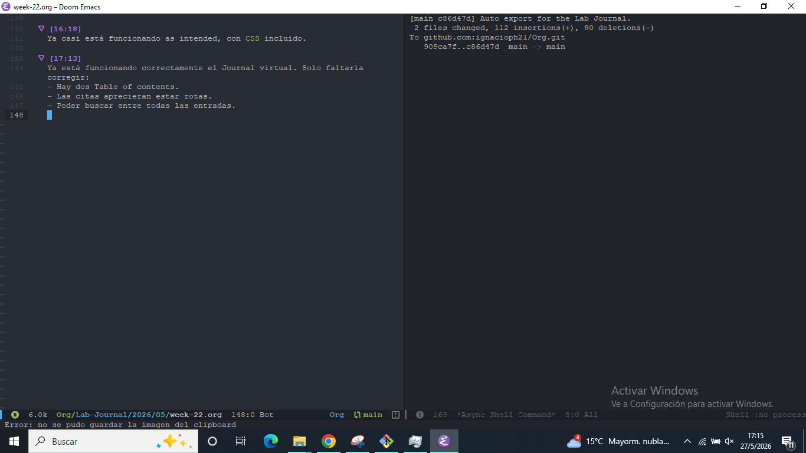

Journal Week 22
Table of Contents
Referencias:
2026-05-26
[08:53]
Estoy empezado a analizar las mediciones de la semana pasada con la rampa en la cuba grande del Laboratorio.
El Viernes pasado había llegado a analizar la medición del sensor posterior a la rompiente para el forzado con decaimiento lineal, cuya serie temporal fue la siguiente:

Y el zoom para uno de los segmentos de 15 segundos (que se repite) es:

La PSD usando Welch con ventanas de 20 segundos es el siguiente:

Con la lineal naranja de pendiente \(f^{-2}\). Aunque a diferencia de lo predicho por (Bonneton 2023) la cola resulta distinta a una caída exponencial, y se ven las pendientes de WWT.
A modo de comparación, la serie temporal que usa Bonneton, que es tomada de una gran facility, medida por van Noorloos en (van Noorloos, n.d.) se ve así:

[09:20]
La serie temporal para el sensor posterior a la rompiente bajo el forzado con decaimiento de una segunda tangente hiperbólica es la siguiente:

En general resulta bastante parecida a la de la caída lineal.
[09:36]
El espectro en este caso es el siguiente:

[09:48]
Una idea para el canal podría ser directamente una pecera de 10 cm de ancho con una tercera placa de vidrio en el medio que se pueda mover para regular el ancho utilizable.
[09:56]
A continuación los resultados para el forzado con una función senoidal de 7 cm de carrera y 1 s de periodo.

Y su espectro asociado:

[10:34]
La idea ahora va a ser resolver la Ecuación de Burgers para saber cuán larga tiene que ser la señal para que el espectro esté convergido y tenga la forma de \(csch^2(\omega)\). Para esto usamos la Ecuación (2.3) de (Bonneton 2023).
[11:10]
Para que Fede pueda medir mañana saqué la rampa y los sensores, aunque quedaron todas las posiciones marcadas. Además, desplazamos horizontalmente el motor hacia adentro, pero en la misma posición donde ya estaba. Una cosa a sumar a los cambios de la rampa es que ésta se llenó completamente de agua, abría que poner un desagote o algo por el estilo.
[13:58]
Ya analicé las mediciones con tres sensores donde la caída es lineal:

La cuestión me parece que va a seguir siendo el tema de la calibración distinta entre los sensores. Si pudiésemos mandar una onda de altura constante se podría calibrar con eso.
La altura 1 se corresponde al más lejano, la 2 al intermedio y la 3 al más cercano a la paleta. La distancia entre 1 y 2 es mayor a la que hay entre 2 y 3, lo cual es congruente con el tiempo entre el pico principal de un sensor al siguiente, si asumimos una velocidad de propagación aproximadamente constante de las ondas.
[14:59]
Los espectros para las tres series temporales son los siguientes.

2026-05-27
[10:20]
Sigo con la solución numérica a la Ecuación de Burgers. Una cosa que pensé ayer es que los estados \(v(x, t_0)\) se parecen mucho a los estados que medimos para \(\eta(x_0, t)\) después de la rompiente.
Al iniciar con un estado aleatorio y dejarlo evolucionar obtenemos lo siguiente:

La serie temporal en el centro es la siguiente:

Con un espectro asociado (en distintas posiciones hasta la mitad) que sigue la Ley predicha por Bonneton:

Donde la línea punteada representa el \(csch^2(f)\) y la lineal es la aproximación a \(f\ll1\).
[12:18]
Estoy intentando configurar org-pusblish para poder exportar todo el Lab-Journal como .html y tenerlo público online mediante las Github Pages.
[12:46]
Ya pareciera estar funcionando, lo siguiente es una prueba para ver si las nuevas imágenes se atualizan bien, sin duplciarlas.

[14:29]
Pareciera ser que las soluciones de la Ecuación de Burgers tienen un signo menos.
[14:39]
Cambié la estructura de un /Assets por mes a un único /Org/Assets.
[14:45]
Ya renombré todas las imágenes del diario hasta ahora con la nueva estructura.
[16:18]
Ya casi está funcionando as intended, con CSS incluido.
[17:13]
Ya está funcionando correctamente el Journal virtual. Solo faltaría corregir:
- Hay dos Table of contents.
- Las citas aprecieran estar rotas.
- Poder buscar entre todas las entradas.
Una última prueba de que funciona correctamente con la nueva estructura de archivos:

Para actualizar la página es SPC n j e de momento, por export.
[17:17]
Está funcionando bien, pero para que cargue todo bien al actualizarse hay que hacer un hard refresh utilizando C-R en la página.
[17:27]
Para poder indexar el contenido de las entradas y buscar entre ellas necesido utilizar el paquete pagefind mediante node.js.
2026-05-28
[08:31]
Sigo configurando la Github Page del cuaderno. Idea próxima son botones de siguiente y anterior para navegar más sencillamente entre entradas.
[08:57]
Ya funciona la búsqueda mediante Pagefind. Lo que conflictuaba era que por la configuración de Jekyll en Github Pages ignora los direcotrios que empiezan con underscore, entonces ignoraba mi _pagefind dentro de Lab-Journal-html.
Puedo buscar coincidencias exactas en el buscador utilizando comillas como en Google. Sin comillas las busca en la misma página sin más hasta donde entiendo.
También se puede buscar:
-palabraexcluye la palabra.pal*busca como prefijo.